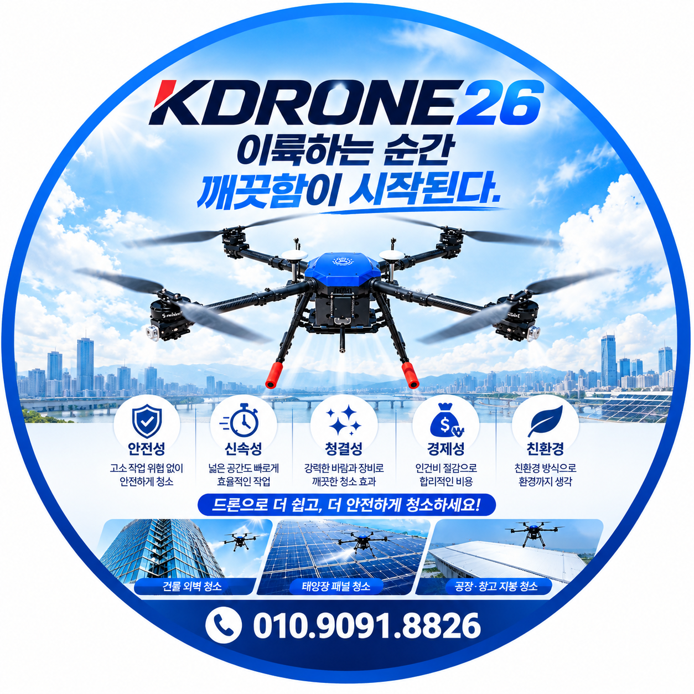

이륙하는 순간 깨끗함이 시작된다.
한국드론청소
태양광패널·태양광모듈·태양광발전소 청소 전문
청소드론을 활용한 태양광청소 방법과 현장 작업을 상담합니다.

태양광패널의 오염 상태와 현장 조건에 맞는 청소 방법을 제안합니다.
KDRONE26 · 한국드론청소는 태양광 발전시설의 태양광패널과 태양광모듈에 발생하는 먼지, 흙, 오염물질 등의 상태를 확인하고 현장에 적합한 태양광 패널 청소 방법을 상담하는 전문업체입니다.
태양광패널은 외부에 설치되는 특성상 먼지와 흙, 꽃가루, 조류 배설물 등 다양한 오염물질이 표면에 쌓일 수 있습니다. 현장 환경과 패널 설치 상태에 따라 적절한 태양광청소 방법을 검토해야 합니다.
특히 대규모 태양광 발전시설이나 접근이 어려운 패널의 경우 작업구역과 주변 환경을 확인한 후 청소드론을 활용한 드론 태양광청소 가능 여부를 상담할 수 있습니다.
태양광 패널 청소업체를 찾고 계신 경우 현장 사진과 패널 설치 위치, 대략적인 규모를 함께 알려주시면 작업 가능 여부와 적합한 청소 방법을 상담해드립니다.
넓은 면적에 설치된 태양광패널은 외부 환경에 지속적으로 노출됩니다. 패널의 오염 상태와 설치 환경을 확인한 후 태양광 발전소 청소에 적합한 방법을 검토합니다.
공장이나 물류창고 지붕 등에 설치된 태양광패널은 높은 위치에 설치되어 직접적인 접근이 어려운 경우가 있습니다. 현장 조건에 따라 청소드론을 활용한 태양광 패널 청소 가능 여부를 상담합니다.
건물 옥상에 설치된 태양광패널은 건물 구조와 접근 조건을 함께 확인해야 합니다. 패널의 위치와 주변 시설물을 확인하여 적합한 태양광청소 방법을 검토합니다.
농지 및 산업시설 주변에 설치된 태양광 발전시설은 먼지와 흙 등의 오염이 발생할 수 있습니다. 현장 규모와 주변 환경을 확인한 후 태양광 패널 청소 방법을 상담합니다.
태양광패널의 위치와 설치 높이, 패널 배열, 주변 시설물 및 접근 조건을 확인합니다.
먼지, 흙, 꽃가루, 조류 배설물 등 패널 표면의 오염 상태와 청소가 필요한 범위를 확인합니다.
태양광패널의 설치 구조와 주변 환경, 드론 비행 및 청소 작업에 영향을 줄 수 있는 장애물을 종합적으로 검토합니다.
패널의 오염 상태와 현장 조건을 고려하여 태양광 패널 청소업체로서 적합한 청소 방법과 작업 범위를 상담합니다.
사전 확인된 작업 조건과 안전관리 기준에 따라 청소드론을 활용한 태양광패널청소를 진행합니다.
태양광패널청소는 단순히 패널 표면을 물로 씻는 작업이 아닙니다. 패널의 설치 구조와 표면 상태, 오염 종류, 주변 시설물 및 작업환경을 종합적으로 확인해야 합니다.
✔ 태양광패널 설치 위치와 높이 확인
✔ 패널 표면의 오염 상태 확인
✔ 패널 배열 및 작업구역 확인
✔ 주변 전선·시설물·장애물 확인
✔ 패널에 적합한 청소 방법 검토
✔ 기상 및 현장 상황에 따른 작업 가능 여부 판단
태양광패널의 설치 위치와 오염 상태, 주변 환경 및 패널 상태에 따라 적합한 청소 방법이 달라질 수 있습니다.
KDRONE26은 현장 조건을 확인한 후 적합한 태양광 패널 청소 방법을 상담합니다.
전체 태양광 발전시설을 청소할 필요가 없는 경우 오염이 심한 특정 패널이나 특정 구간을 대상으로 부분청소를 상담할 수 있습니다.
부분청소는 오염이 집중된 구간을 중심으로 작업 범위를 검토할 수 있어 필요한 부분부터 태양광청소 방법을 상담할 수 있습니다.
현장 사진과 위치 정보를 보내주시면 태양광 패널 청소 가능 여부와 적합한 작업 방법을 상담해드립니다.
태양광패널은 야외에 설치되기 때문에 먼지, 흙, 꽃가루, 조류 배설물 등 다양한 오염물질이 표면에 쌓일 수 있습니다. 오염 상태가 심한 경우 패널 관리 차원에서 청소를 검토할 수 있습니다.
현장 조건에 따라 청소드론을 활용한 드론 태양광청소 방법을 검토할 수 있습니다. 패널의 설치 위치와 높이, 주변 시설물, 장애물 등을 먼저 확인합니다.
대규모 태양광 발전시설도 현장 조건을 확인한 후 태양광 발전소 청소 방법과 청소드론 활용 가능 여부를 상담할 수 있습니다.
네. 오염이 집중된 특정 패널이나 특정 구간을 대상으로 부분청소를 상담할 수 있습니다.
태양광 발전시설의 위치와 패널 사진, 대략적인 규모 및 청소가 필요한 구간을 보내주시면 현장 조건을 확인하여 태양광청소 작업을 상담합니다.
서울·경기·인천을 비롯하여 전국 지역의 태양광패널청소 및 태양광발전소청소 현장을 상담합니다.
태양광패널청소 · 태양광발전소청소 · 태양광모듈청소
공장·창고 태양광청소 · 건물 옥상 태양광청소 · 부분청소 · 물청소
서울 · 경기 · 인천 · 강원 · 충청 · 전라 · 경상 · 제주
전국출장가능